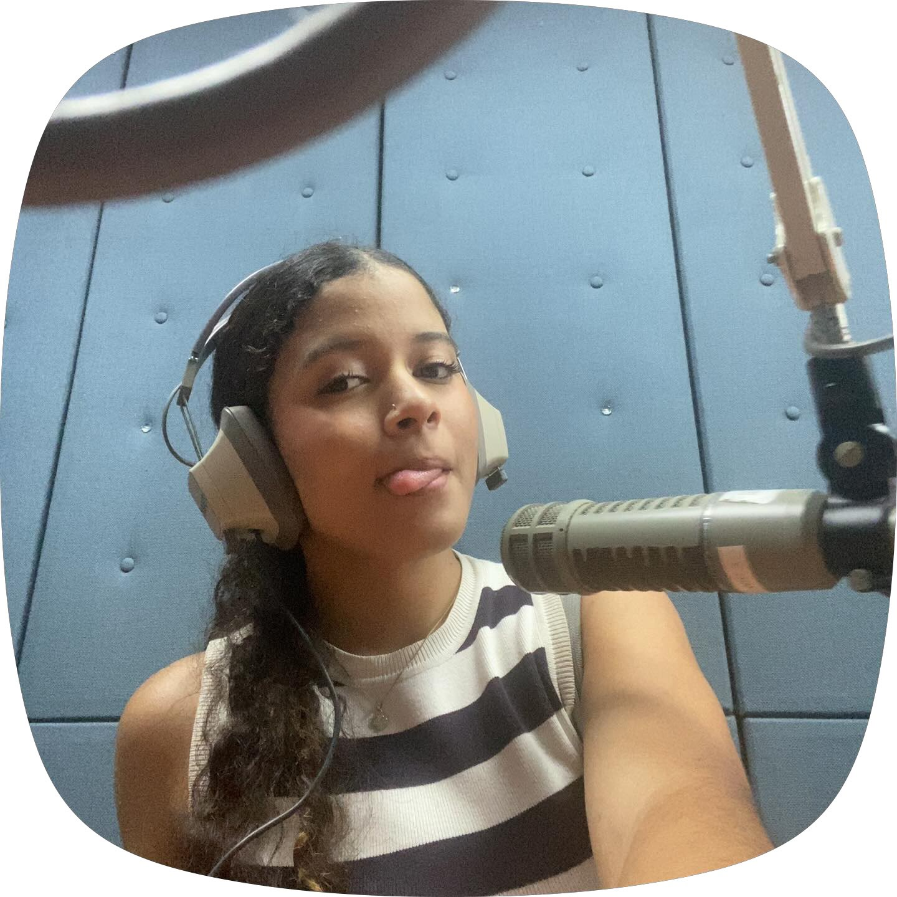
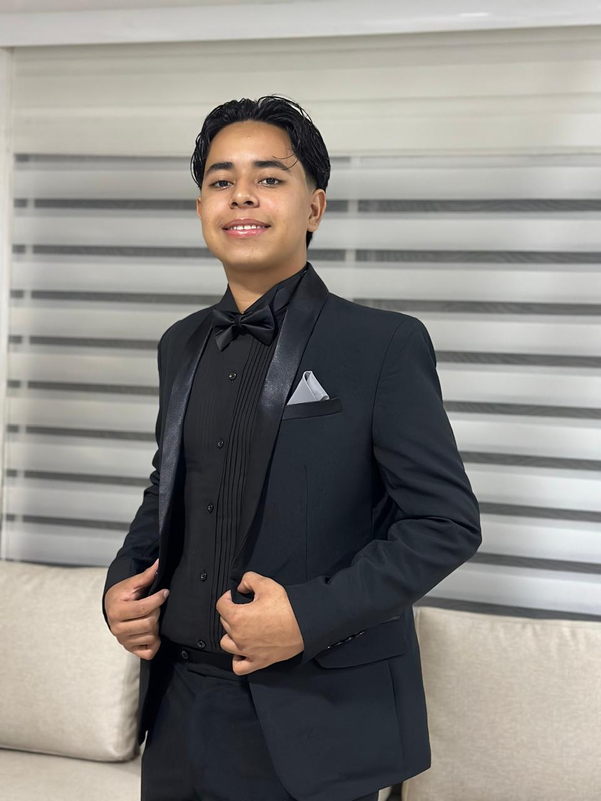

Fotografía de Ehimy Valentina Valenzuela
Lopez
images/integrantes/ehimy-valentina.jpg
images/integrantes/ehimy-valentina.jpg
Somos estudiantes de Comunicación Social y Periodismo y creamos este espacio como parte de nuestro proceso de formación académica.
Nos interesa comprender cómo la literatura y el periodismo han influido en la sociedad, cómo han evolucionado con el paso del tiempo y de qué manera continúan transformándose con las nuevas tecnologías.
A través de este blog buscamos compartir conocimientos, explorar diferentes perspectivas y reflexionar sobre la importancia de la comunicación en nuestra vida cotidiana.
Creemos que contar historias implica mucho más que transmitir información: significa comprender contextos, escuchar diferentes voces y reconocer las realidades que existen detrás de cada acontecimiento.
Nuestra intención es aprender, investigar y comunicar, entendiendo que cada historia merece ser contada con responsabilidad.
Crear un espacio digital de aprendizaje y reflexión donde la literatura y el periodismo se encuentren para explicar el pasado, comprender el presente y pensar el futuro de la comunicación.


Universidad Autónoma del Caribe - Teoría de periodismo - Jaime de la Hoz - 2026